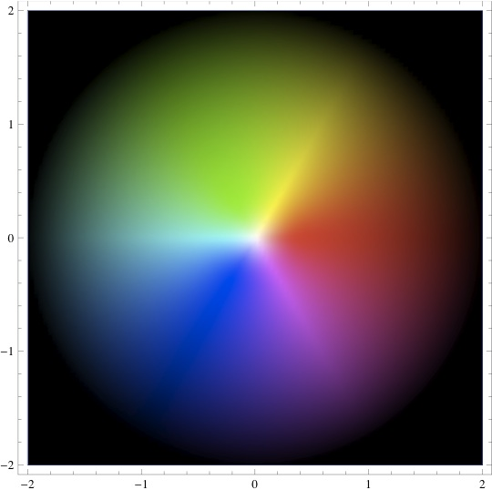
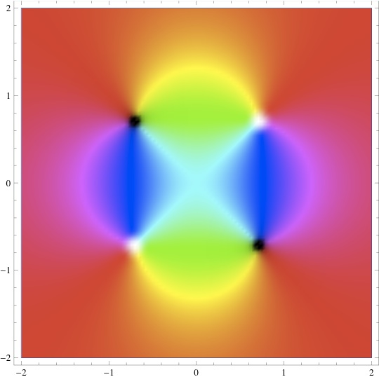

Instructions: download this (i.e., save it, don't just open it in your browser). Double-clicking should then open a Mathematica window. Enable dynamic content. Play around by modifying things and seeing how the pictures change!
Tip: use shift-return to execute a line of code.
|  | \( f(z)= \frac{z^2-i}{2z^2+i} \) |  |
| \( f(z)= \frac{z^2-i}{2z^2+i}- \frac{1}{2} \) |  |